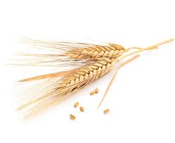
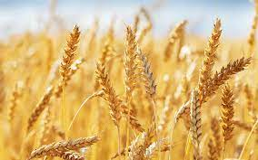

МАСЛО ЗАРОДЫШЕЙ
ПШЕНИЦЫ
СОСТАВ
ЧЕМ ТАК ПОЛЕЗНО?
Масло зародышей пшеницы - самое богатое из масел по составу.
Оно содержит незаменимые жирные кислоты (линолевая, линоленовая, олеиновая), витамины группы B, E, D,
бета-каротин, цинк, селен, сквален.
Витамин А обеспечивает хорошее зрение в темноте, поддерживает здоровье кожи и зубов, укрепляет кости, защищает лёгкие от токсичных веществ, используется в лечении многих заболеваний, а также содержится во многих шампунях и кремах.
Витамин D обеспечивает нормальный рост и развитие костей, предупреждает развитие рахита и остеопороза, способствует мышечному тонусу, повышает иммунитет, помогает организму восстанавливать защитные оболочки, окружающие нервы, участвует в регуляции артериального давления и сердцебиения, препятствует росту раковых и клеток.
Также Витамин D необходим для функционирования щитовидной железы и нормальной свертываемости крови.
Витамин Е нужен для замедления процесса старения клеток, поддержания нормального уровня гемоглобина, укрепления стенок капилляров, защиты клеток крови, что способствует улучшению снабжения организма кислородом и общей защитной функции, для свертываемости крови, работы миокарда, нервной ткани и иммунитета, поддержания детородной функции.
ОТЛИЧИЕ
ПОЧЕМУ НЕ ПРОРОСШАЯ ПШЕНИЦА?
Пророщенная пшеница — это ядро зерна, получившее энергию всхода и давшее росток.
Эту энергию даёт зерну зародыш, в котором находятся все полезные вещества, необходимые для образования ростка.
Но вместо множества витаминов, минералов, углеводов, жиров и других ценных веществ, содержащихся в зародышах, мы получаем клетчатку.
То же самое можно сказать и об отрубях.
Отруби — это защитные оболочки зерна, являющиеся источником грубой клетчатки.
Витамины и минералы, содержащиеся в отрубях, находятся в не доступной для организма человека форме.
Из-за этого они оказывают эффект «веника» на желудочно-кишечный тракт.

ПРОФИЛАКТИКА
НУЖНО ЛИ ЗДОРОВЫМ ЛЮДЯМ?
В наш век понятие "здоровый человек" весьма условно.
Неблагоприятная экологическая обстановка и нерациональное питание
приводят к образованию в организме вредных соединений,
которые оказывают повреждающее влияние на клеточную структуру.
Масло зародышей пшеницы богато токоферолами,
мука - селеном, а это мощные антиоксиданты.
Одновременное употребление масла и муки зародышей пшеницы образует связку токоферол-селен.
Эта связка в состоянии нейтрализовать
действие свободных радикалов на организм.
В результате происходит нормализация функционирования
клеточных структур и, как следствие, замедление процесса старения,
предупреждение развития новообразований,
повышения иммунных способностей организма.
НЕХВАТКА ВИТАМИНОВ
КАК ВЛИЯЕТ НА НАШЕ ЗДОРОВЬЕ?
В период активного формирования организма длительная нехватка витаминов способна оказывать пагубное влияние на
состояние здоровья.
Хронический дефицит витаминов тормозит рост, негативно влияет на показатели физического и умственного развития,
понижает выносливость и успеваемость в школе.
Авитаминоз опасен в первую очередь тем, что длительный витаминный голод способствует развитию заболеваний,
имеющих серьёзный риск перехода в хроническую форму.
Нехватка витаминов оказывает негативное влияние на формирование органов, а также на интеллектуальное развитие.
